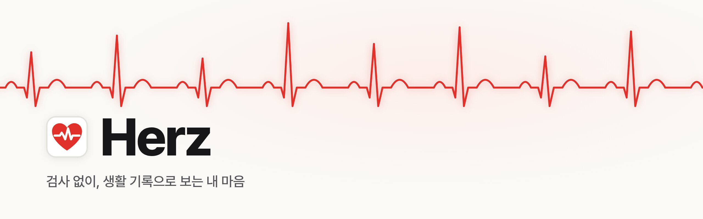
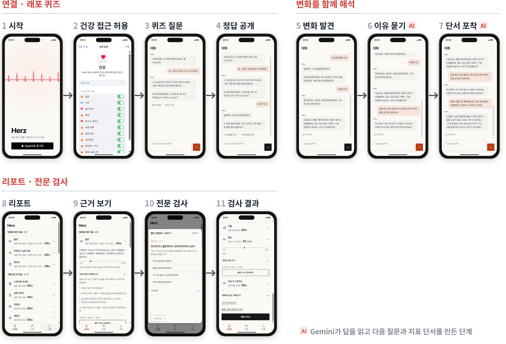

← 학습 기록 목차

Herz
AI 에이전트가 흩어진 생활 기록을 통해 변화를 파악하고, 심리 상태를 분석하고 추적하는 서비스입니다.
2026 대한민국 청년 CAREER FAIR AI 해커톤 · 팀 프로젝트 · 2026-11
무엇을 하나요
Apple 건강 기록에서 최근 2주와 평소의 나를 비교하고, 달라진 부분을 대화로 짚어 봅니다.

- 연결 · 래포 퀴즈 (1–4):
export.xml은 브라우저 안에서만 읽고, 가벼운 퀴즈로 말문을 엽니다.
- 변화를 함께 해석 (5–7): 달라진 지표마다 이유를 묻고, 그 답의 이유를 한 번 더 묻습니다.
- 리포트 · 전문 검사 (8–11): 점수는 검증된 검사지로만 매깁니다.
발표 자료
1 / 12
← → 키로 넘기기
PDF